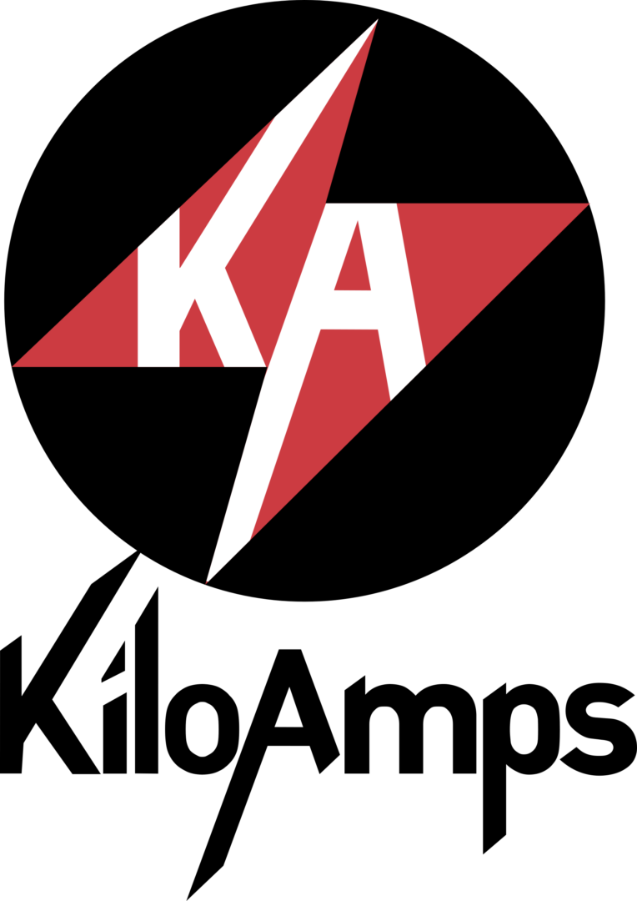

juil. 2023 - aujourd'hui · 8 mois
.png)
Site Data Owner pour construire les pipelines de données de la mesure jusqu'à la visualisation en passant par le stockage et l'extraction dans un Data Lake grâce à l'outil Snowflake.
Biostatisticien pour les différents vaccins au sein de Sanofi Pasteur sur le site de Marcy l'Étoile.
Étroite collaboration avec les sites de Toronto (CA), Swiftwater (US) et Val De Reuil (FR).
août 2022 - juin 2023 · 11 mois

Le principal de ma mission consiste en la reconstruction de la puissance des onduleurs et de la données d'irrandiance (GHI) des pyranomètres tout deux installés sur plusieurs centaines de centrales photovoltaïque.
Pour faire cela un travail de Data Cleaning a été primordial, pour ensuite prédire les données grâce à des algorithmes de Machine Learning.
août 2021 - nov. 2021 · 4 mois

Développement Python Full-stack : Automatisation des calculs de performance du parc solaire et mise en place d'une procédure automatique de détection de pannes.
Analyse de données massive sur Python en utilisant différentes librairies pour la manipulation et la normalisation des données.
Étude de la performance énergétique des panneaux photovoltaïque fixes monocristallin, polycristallin et bifacial.
oct. 2020 - avr. 2021 · 7 mois
Durant mon année de césure j'ai travaillé à Edinburgh Homecare qui fournit des soins indépendants à des personnes atteints de problèmes physiques et/ou de démence.
Services de soins à domicile, souples et professionnels, aidant les personnes à conserver leur indépendance au sein de leur propre foyer et de la communauté locale.
Travail en équipe avec des personnes de toutes nationalités.
juin 2019 - juil. 2019 · 2 mois
La mission principale du stage était d'organiser et de présenter un Hackthon - Dataviz sur la résilience.
Découverte du fonctionnement et de l'historique complet des panneaux solaires.
Le stage portait également sur le développement du site internet sur WordPress afin de rajouter du contenu et des fonctionnalités, ainsi que la réécriture d'articles environnementaux.
juin 2018 - août 2018 · 3 mois

Ouvrier polyvalent sur la fabrication de circuits secondaire de fours à arc en tube de cuivre refroidis par eau pour le transport des courants à haute tension.
Fabrication de gaines à barres de puissance isolée dans la résine et fabrication de câbles refroidis par eau.
Soudage du cuivre, brasage à l'argent, étude du fonctionnement mécanique des machines.